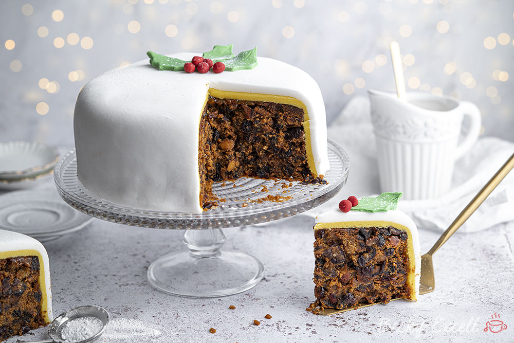

INGREDIENTS
- 850 g mixed dried fruit
- 2 lemons both zested and juice of 1 (you could use oranges here too)
- 120 ml amaretto or brandy
- 225 g dark brown sugar
- 225 g butter softened (or dairy-free alternative)
- 4 eggs
- 1 tbsp black treacle
- 1.5 tsp mixed spice
- 225 g gluten free plain flour
- 1/2 tsp xanthan gum
- 25 g ground almonds
- 50 g blanched almonds chopped
- apricot jam
- 400 g marzipan golden or white
- 700 g white fondant icing
INSTRUCTIONS
-
Preheat your oven to 140C (NOT fan) If you only have a fan oven go for 115-120C Fan.
-
Prepare a 20cm loose bottom, high sided circular tin (linked above and below). Preparing your tin is a little more involved for this cake as it's in the oven for SO long. Instead of explaining here, I will pop a link to a video that will help with this in the FAQ section above - it needs to be double lined and double wrapped around the outside too.
-
Add all your cake ingredients (softened butter, sugar, eggs, treacle, mixed spice, gluten free flour, xanthan gum, ground almonds and chopped almonds to a bowl.) Mix with an electric mixer until fully combined.